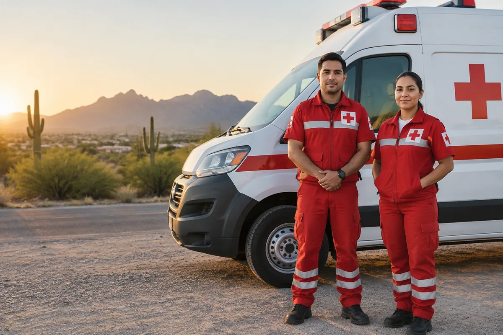
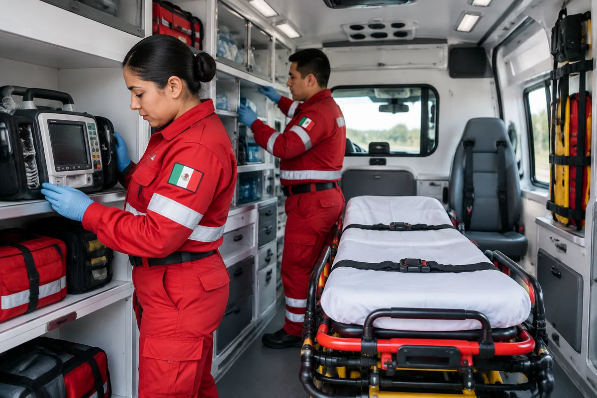
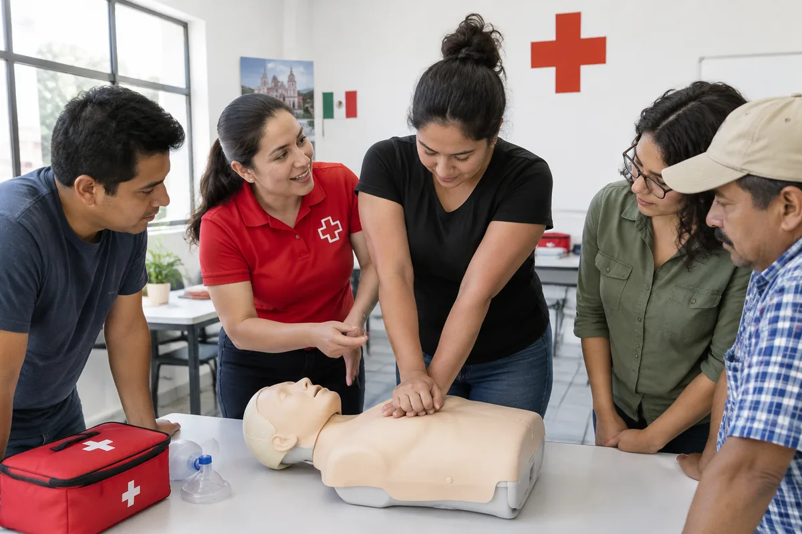
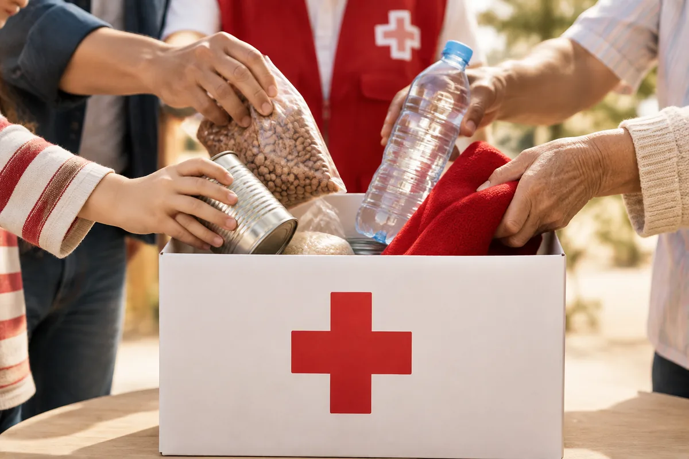
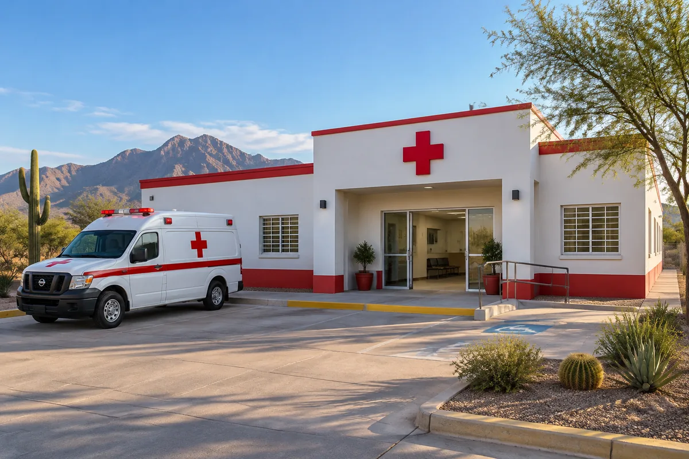

Ambulancias
Traslados de urgencia y programados.
Atención prehospitalaria y ambulancias para Caborca y su región.

Somos parte de la Cruz Roja Mexicana, institución humanitaria que desde 1910 ayuda a las personas más vulnerables. En Caborca, voluntarios y personal técnico atienden emergencias en la ciudad, ejidos y la carretera federal 2.


Traslados de urgencia y programados.
Paramédicos certificados.
Apoyo en accidentes y desastres.
Curaciones y toma de signos.

Únete a Juventud, Socorros o Damas Voluntarias. No necesitas experiencia: te capacitamos.

Tu donativo mantiene las ambulancias en la calle. Participa en la Colecta Anual o dona directamente en nuestra delegación.

